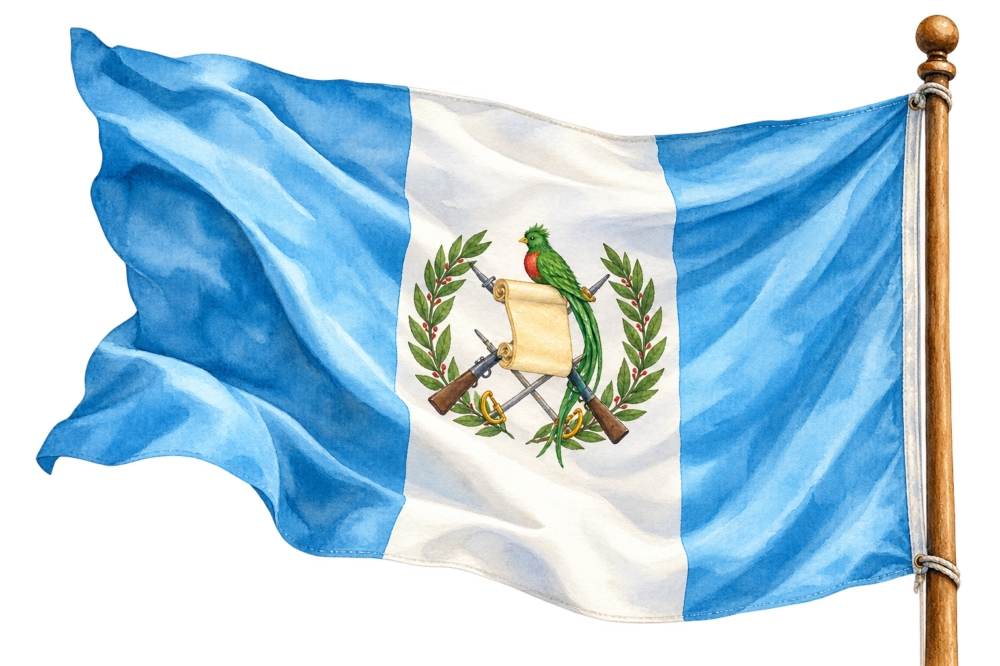
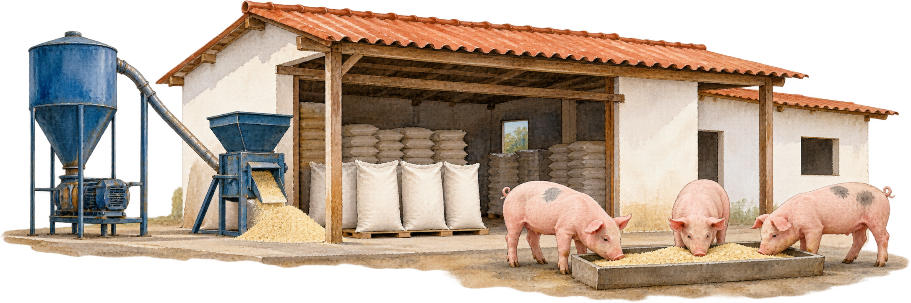
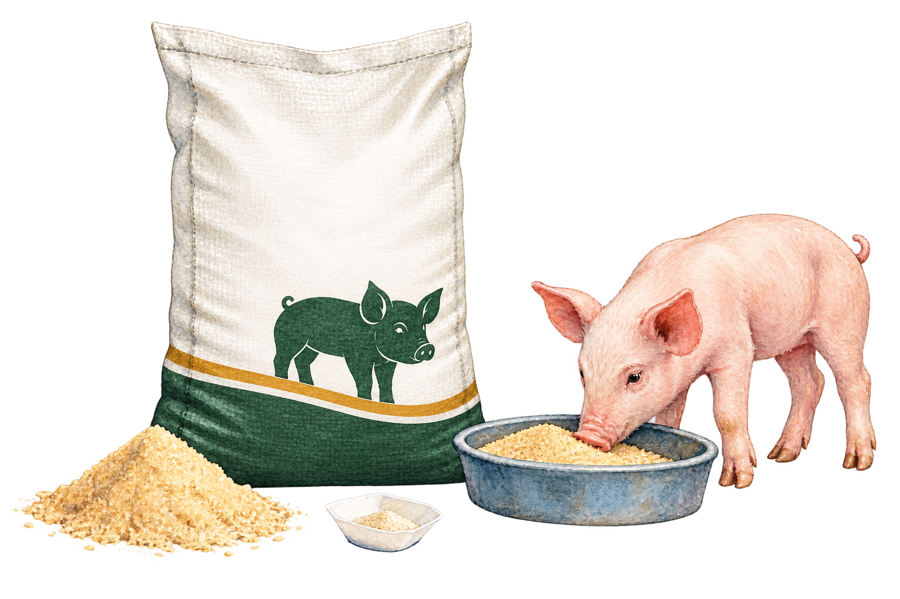
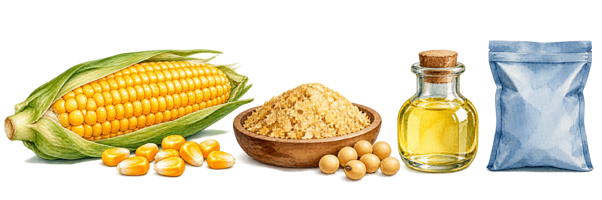
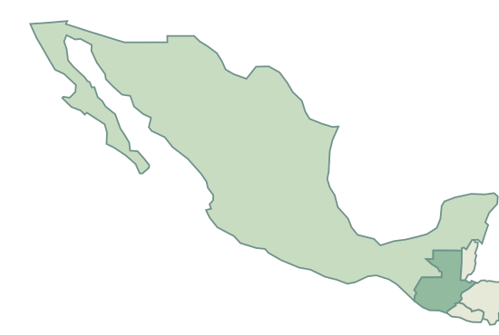
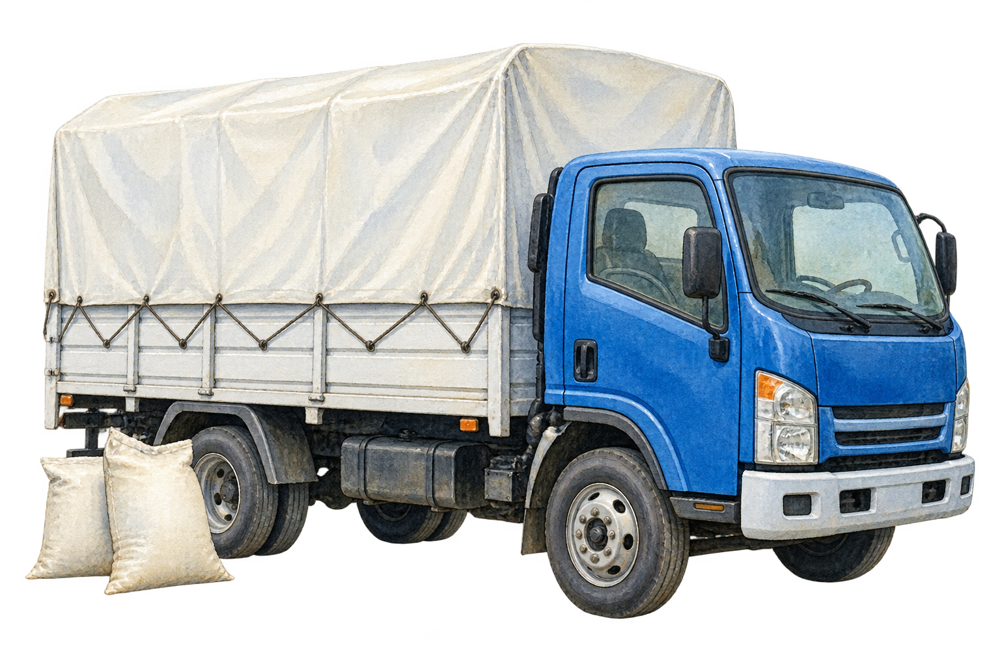
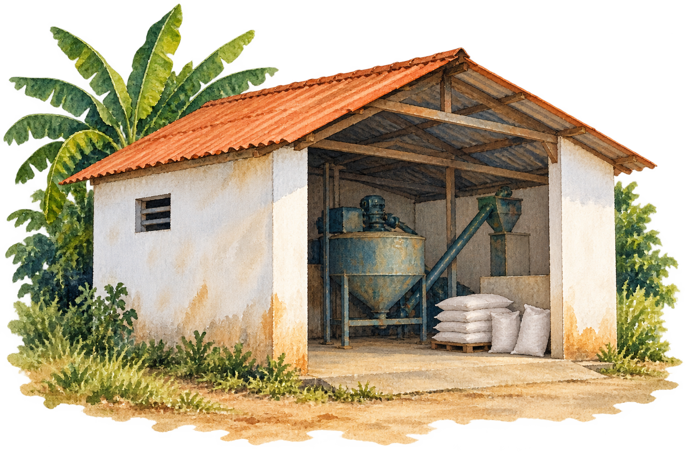
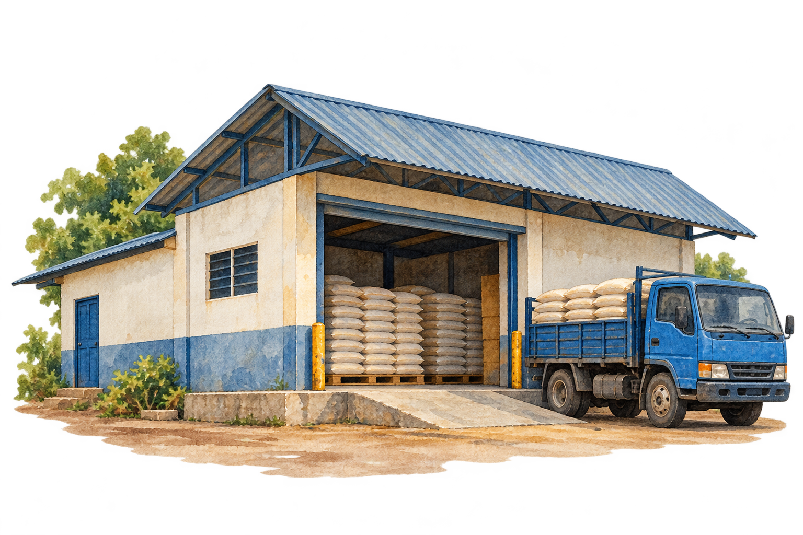
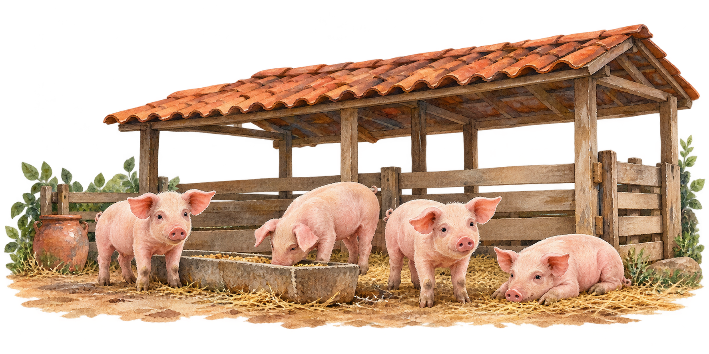

PROYECTO AGRODIG · MISANTLA → GUATEMALA
Un viaje
con sabor.
¿Quieres saber sobre el producto
o quieres jugar una dinámica?
Explora el proyecto o acompaña al cerdito en el potrero.

Una idea con respaldo.
Un nuevo destino.
Psst… toca al cerdito.

01 / UNA HISTORIA QUE EMPIEZA CERCA
De Misantla,
con propósito.
AGRODIG es una pequeña empresa veracruzana que elabora y comercializa alimento para animales.
Con tres años de funcionamiento, une producción, atención en tienda y reparto. Este proyecto toma uno de sus productos: el alimento iniciador para lechones, y propone darle un atributo sensorial para explorar el mercado guatemalteco.
El objetivo: integrar producto, evidencia científica, mercado y comercio exterior en una misma propuesta.

Una oportunidad específica.
02 / ¿QUÉ HAY EN EL SACO?
Un alimento listo
para empezar.
La fórmula es un alimento iniciador terminado: una mezcla lista para suministrarse según su ficha técnica.
Combina fuentes de energía, proteína y micronutrientes para la etapa inicial del lechón y su transición al alimento sólido. Se presenta en harina, en sacos de 40 kg.
Se ajusta el maíz para conservar la masa total del lote.

Ilustración de la presentación propuesta.

03 / EL SABOR TAMBIÉN CUENTA
Un poquito de dulzor.
Una idea sensorial.
La sucralosa es un edulcorante de alta intensidad: produce sabor dulce con cantidades muy pequeñas.
No se incorpora como fuente de energía. Su papel en la propuesta es sensorial: los lechones perciben el sabor dulce, y un alimento atractivo puede favorecer su palatabilidad, aceptación y consumo voluntario.
La palatabilidad es qué tan aceptable resulta un alimento por sus características sensoriales. Es especialmente relevante cuando el lechón pasa de la leche al alimento sólido.
La nutrición la aporta la mezcla. La sucralosa suma un atributo de sabor.
Toca cada paso para seguir la idea.
04 / DULZOR CON RESPALDO CIENTÍFICO
La idea tiene
mucho que contar.
Cinco publicaciones conectan percepción del sabor, preferencia y alimentación de lechones.
El proyecto reúne dos trabajos experimentales de alimentación, una investigación del receptor porcino y dos revisiones. Cada uno responde una pregunta diferente.
El sabor dulce tiene una base biológica en el cerdo y los ensayos aportan resultados de preferencia y consumo. Por eso, la propuesta incorpora la sucralosa como atributo sensorial de un alimento iniciador.
Las cifras de esta sección pertenecen a los estudios publicados.05 / UN DESTINO CON SENTIDO
¿Por qué
Guatemala?
La oportunidad está en atender un segmento concreto, dentro de un mercado que ya compra alimento animal.
La actividad porcina, las compras recurrentes a México y la frontera compartida ofrecen una base comercial y una conexión terrestre. Un distribuidor especializado puede acercar la fórmula a granjas pequeñas y medianas con lechones.
La diferenciación combina un producto para una fase específica, un atributo sensorial y una presentación fácil de manejar.
La oportunidad se construye con precio de entrega, información técnica, servicio y capacidad de mantener el suministro.
Consultar datos de importación ↗La categoría comercial comprende distintas especies y etapas; no equivale únicamente a alimento para lechones. En 2024 creció el total importado, mientras bajaron las compras desde México.
06 / UN VIAJE BIEN ORGANIZADO
Una ruta.
Dos responsabilidades.
Misantla, Veracruz → Tapachula, Chiapas → Guatemala.
La entrega propuesta es FCA en Tapachula. El punto preciso se identifica en el contrato. Desde allí, el comprador organiza la continuación del transporte hacia Guatemala.
Una regla internacional que distribuye costos, riesgos y obligaciones entre vendedor y comprador.
FCA: Free Carrier / franco porteador · Incoterms® 2020.La empresa prepara el pedido y organiza el traslado al lugar de entrega convenido en Tapachula.


Toca las paradas para conocer cada responsabilidad.
07 / DEL PRODUCTO AL MERCADO
Un primer paso
a la medida.
La estrategia combina diferenciación sensorial y distribución local.
El primer pedido se plantea pequeño, sin exclusividad y compatible con la capacidad disponible. El distribuidor concentra pedidos y conecta con granjas; la aceptación, la recompra y el abastecimiento orientan la continuidad.

La empresa
Distribuidor
Granjas con lechonesUna propuesta empresarial que une alimento, ciencia y comercio exterior.
¿Qué permite llegar al mercado?
Clasificar el producto
La fracción arancelaria es el código que identifica la mercancía en aduana y permite conocer aranceles y requisitos. El proyecto propone en México 2309.90.99 y en Guatemala el inciso 2309.90.90.00, según las características del alimento.
Acreditar el origen
La preferencia arancelaria de 0 % está sujeta al cumplimiento del Tratado de Libre Comercio México–Centroamérica y de sus reglas de origen. Se documentan insumos, fabricación y prueba de origen.
Preparar el acceso sanitario
El expediente identifica el alimento, su composición completa, garantías, proceso, análisis y etiqueta. El operador guatemalteco gestiona el registro y los permisos aplicables ante el MAGA.
Cuidar el pedido y la trazabilidad
Ficha técnica, conservación, identificación de lotes, factura, lista de empaque y documentos del transporte conectan la fabricación con la entrega. La información del saco debe ser clara y congruente con el registro.
El producto espera del otro lado.